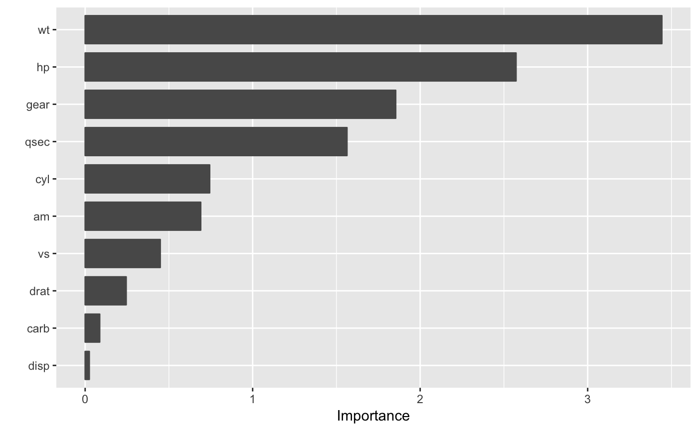

vi.RdCompute variable importance scores for the predictors in a model.
vi(object, method = c("model", "pdp", "ice", "permute"), feature_names, FUN = NULL, abbreviate_feature_names = NULL, sort = TRUE, decreasing = TRUE, scale = FALSE, ...)
| object | A fitted model object (e.g., a |
|---|---|
| method | Character string specifying the type of variable importance
(VI) to compute. Current options are |
| feature_names | Character string giving the names of the predictor variables (i.e., features) of interest. |
| FUN | List with two componenets, |
| abbreviate_feature_names | Integer specifying the length at which to
abbreviate feature names. Default is |
| sort | Logical indicating whether or not to order the sort the variable
importance scores. Default is |
| decreasing | Logical indicating whether or not the variable importance
scores should be sorted in descending ( |
| scale | Logical indicating whether or not to scale the variable
importance scores so that the largest is 100. Default is |
| ... | Additional optional arguments. |
A tidy data frame (i.e., a "tibble" object) with two columns:
Variable and Importance. For "glm"-like object, an
additional column, called Sign, is also included which includes the
sign (i.e., POS/NEG) of the original coefficient.
Greenwell, B. M., Boehmke, B. C., and McCarthy, A. J. A Simple and Effective Model-Based Variable Importance Measure. arXiv preprint arXiv:1805.04755 (2018).
# # A projection pursuit regression example # # Load the sample data data(mtcars) # Fit a projection pursuit regression model mtcars.ppr <- ppr(mpg ~ ., data = mtcars, nterms = 1) # Compute variable importance scores vi(mtcars.ppr, method = "ice")#> Warning: Setting `method = "ice"` is experimental, use at your own risk!#> # A tibble: 10 x 2 #> Variable Importance #> <chr> <dbl> #> 1 wt 3.44 #> 2 hp 2.57 #> 3 gear 1.85 #> 4 qsec 1.56 #> 5 cyl 0.743 #> 6 am 0.690 #> 7 vs 0.448 #> 8 drat 0.245 #> 9 carb 0.0870 #> 10 disp 0.0248#> Warning: Setting `method = "ice"` is experimental, use at your own risk!